GO IV 計算是為 Pokémon GO 玩家設計的 IV 計算工具。上傳遊戲內精靈摘要截圖，App 在裝置上辨識 CP、HP 與強化星塵，並依圖鑑數值反推可能的 IV 組合與等級。不提供手動輸入數字，也不做螢幕側錄。
產品重點
- 摘要截圖計算：一次選一張精靈摘要，辨識後直接顯示結果；無效圖片會提示錯誤，不會寫入歷史。
- 圖鑑：瀏覽三圍、屬性、進化、技能與各等級 CP 區間；圖鑑資料可從遠端更新，離線時使用 App 內建備份。
- 本機資料：計算歷史與收藏只存在您的 iPhone／iPad；歷史保留辨識結果與相簿識別碼，不儲存截圖檔案。
- 進階參考：結果頁可開啟好夥伴加成；圖鑑與收藏可參考進化後等級 50 最大 CP，以及三聯盟 PvP 區間（超級／高級／大師）。
操作手冊
圖鑑、IV、結果與收藏使用不含遊戲內畫面的介面示意。選圖權限與訓練師等級仍為模擬器截圖。實機外觀與字級可能略有差異。
1. 圖鑑
底部 Tab「精靈」可搜尋編號、中文或英文名，點選牌卡進入詳細頁。詳細頁提供三圍、屬性相剋、進化鏈、技能與等級 50 最大 CP／HP、各等級 CP 區間。圖鑑內不能手動輸入 CP 計算，計算請使用 IV Tab。
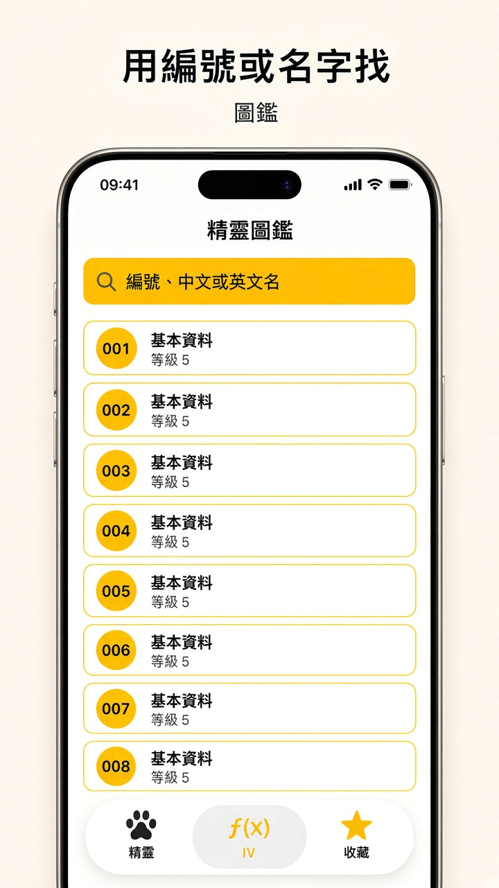
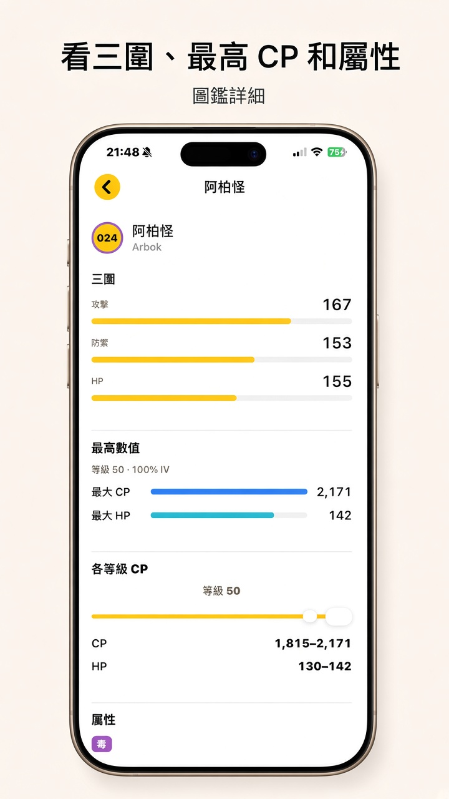
2. IV 計算與選圖
- 在 Pokémon GO 中對精靈摘要（含 CP、HP、強化星塵）截圖。
- 開啟 App 的 IV Tab，點「幫精靈評價」。
- 首次使用需允許相簿存取，以便選圖；建議選擇允許完整取用（僅用於您主動選圖，見隱私權）。
- 在「選擇截圖」格狀清單中點一張摘要；辨識成功會在同一流程顯示結果，可加入收藏或關閉。
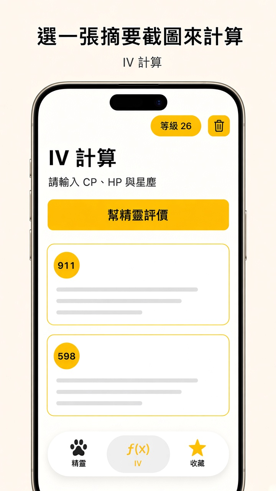
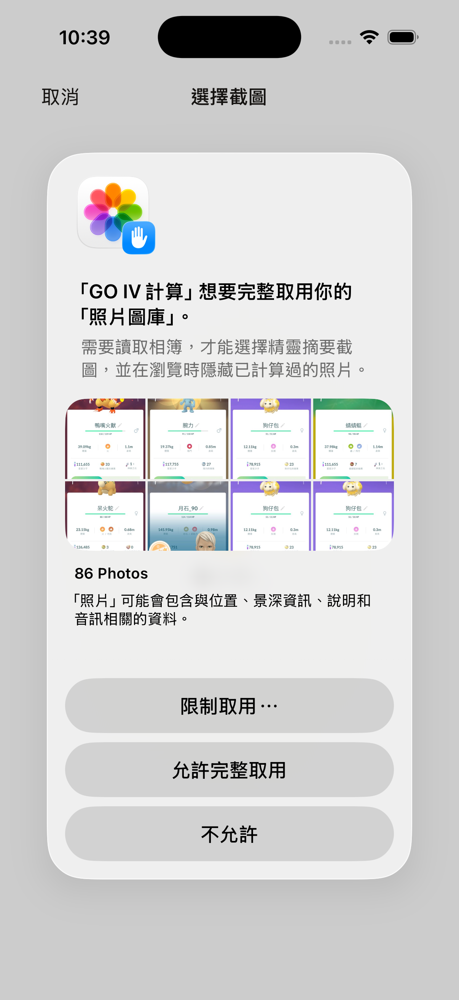
問號可展開說明：歷史保留 90 天、可左滑刪除單筆；收藏不會因過期而刪除。
3. 訓練師等級
IV Tab 左上角「等級」膠囊可設定訓練師等級（或不設定）。等級用於摘要弧線推斷精靈等級上限，不參與 CP 公式。若仍有多個可能等級，結果頁會提示補上訓練師等級或強化後再算。
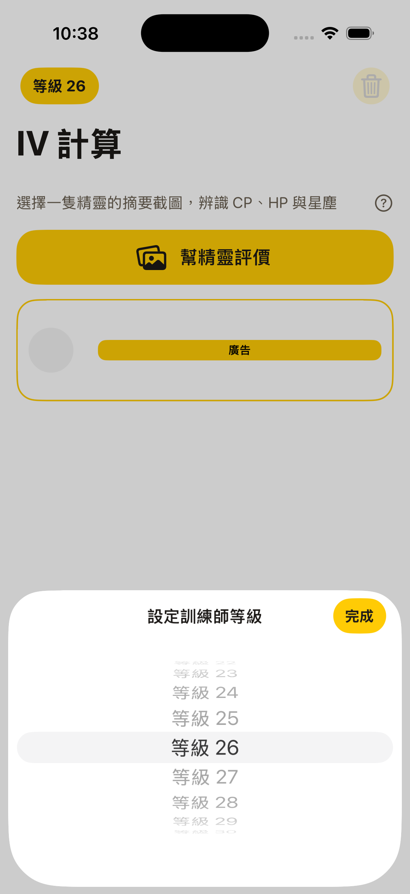
4. 結果與收藏
結果頁顯示 IV 評價、攻擊／防禦／體力 IV、等級滑桿與建議文案。範圍很大時圓環可能顯示「?」。可開啟好夥伴加成查看加成後 CP／HP。滿意的一組 IV 可點右上角星號加入收藏。
底部 Tab「收藏」可搜尋已儲存的 IV 組合；點牌卡會載入當初收藏的那一組（不重算全部組合）。
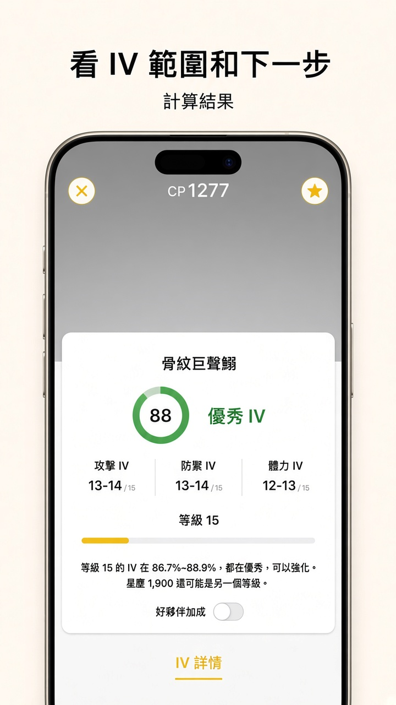
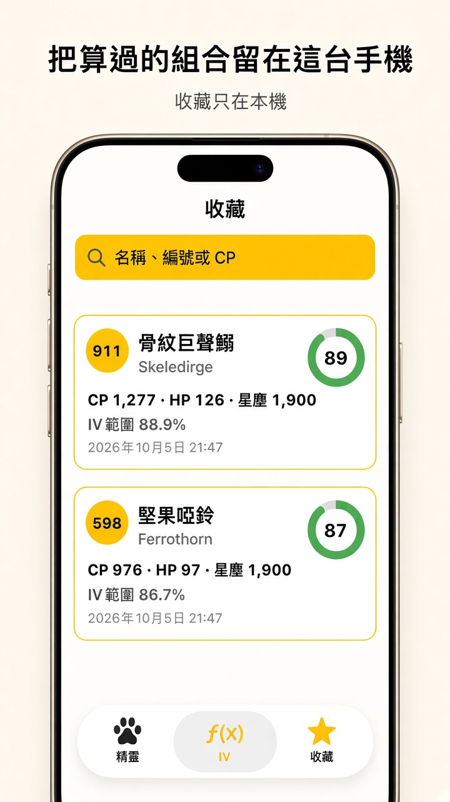
5. 歷史與相簿排除
- 成功計算後，該張照片的相簿識別碼會記在歷史；再次開啟選圖時，同一張摘要會從格狀清單隱藏，避免重複計算。
- 在 IV Tab 左滑刪除單筆歷史，或點右上角垃圾桶清除全部（會先確認；不刪收藏）後，該照片會重新出現在選圖清單。
- 超過 90 天的歷史會在開啟 IV Tab 時自動清除；收藏不受影響。
GO IV Calculator helps Pokémon GO players estimate IVs from in-game summary screenshots. The app reads CP, HP, and power-up stardust on your device and infers possible IV combinations and level. There is no manual numeric entry and no screen recording.
Highlights
- Summary screenshots: Pick one summary per calculation; invalid images show an error and are not saved to history.
- Dex: Browse stats, types, evolution, moves, and CP ranges; catalog may update from the network with an offline bundled fallback.
- On-device data: History and favorites stay on your device; history stores results and a photo identifier, not the image file.
- Extras: Buddy boost on the results screen; Great / Ultra / Master League PvP ranges and post-evolution level-50 CP references.
User guide
Dex, IV, results, and favorites use interface mockups with no in-game artwork. The photo-permission and trainer-level shots are still simulator screens. Layout may vary slightly on a physical device.
1. Dex
Open the Dex tab to search by number or name and open a species page for stats, types, evolution, moves, and CP tables. IV calculation is only available from the IV tab.
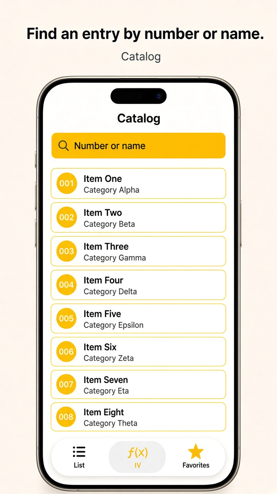
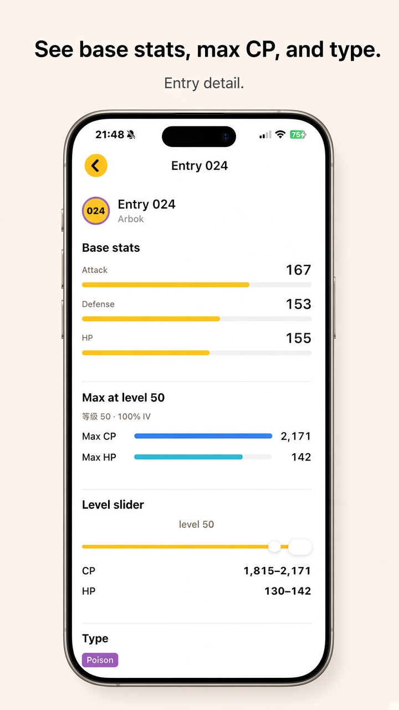
2. IV & picking a screenshot
- Take a summary screenshot in Pokémon GO (CP, HP, power-up stardust visible).
- On the IV tab, tap Appraise Pokémon.
- Grant photo library access when prompted so you can pick an image (see Privacy).
- Tap one thumbnail; on success the result appears in the same flow—you can favorite or close.
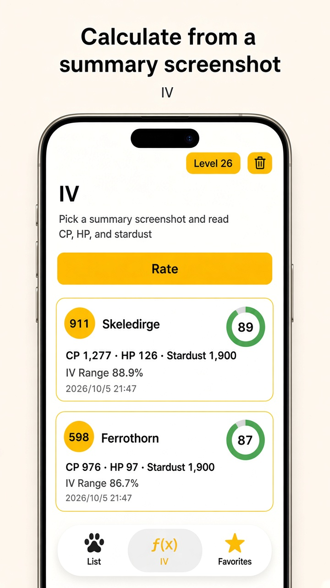
3. Trainer level
Tap the Level capsule on the IV tab to set your trainer level (or leave unset). This refines arc-based level caps and does not change the CP formula.
4. Results & Saved
The results screen shows grade, IV stats, level slider, and tips. Use Buddy boost to see boosted CP/HP. Tap the star to save the selected IV set to Saved.
The Saved tab lists stored IV sets; tapping a card reloads that saved combination only.
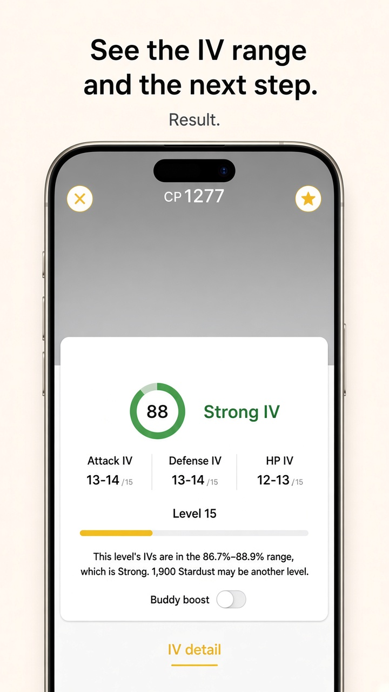
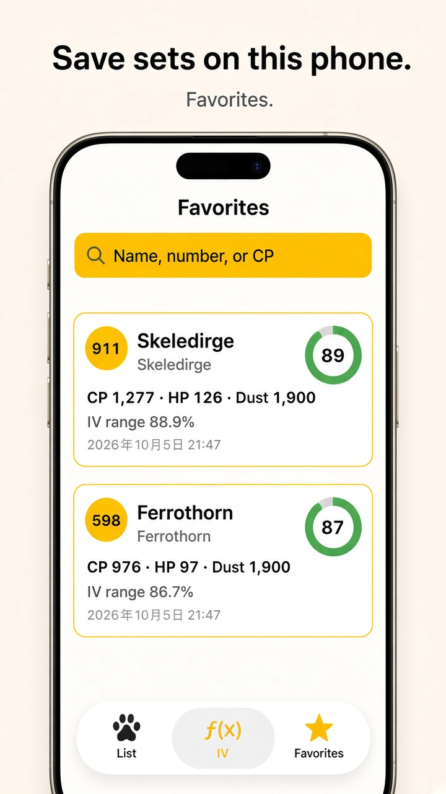
5. History & album exclusion
- After a successful calculation, that photo’s library identifier is stored; the same summary is hidden in the picker grid until you remove its history entry.
- Swipe to delete one history row, or use Clear all (with confirmation; does not delete Saved) to show the photo again.
- History older than 90 days is removed when you open the IV tab; Saved items are kept.